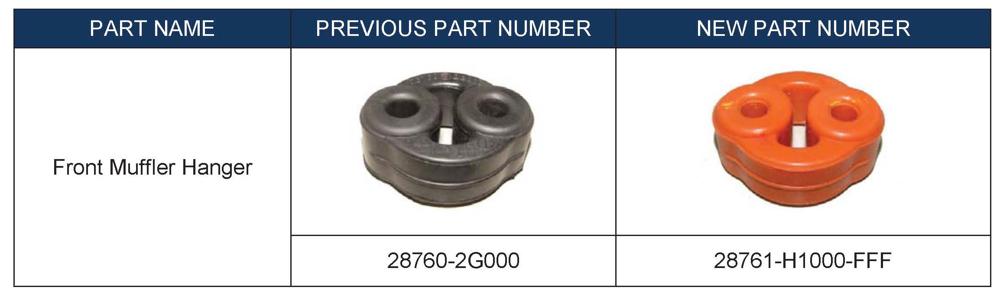
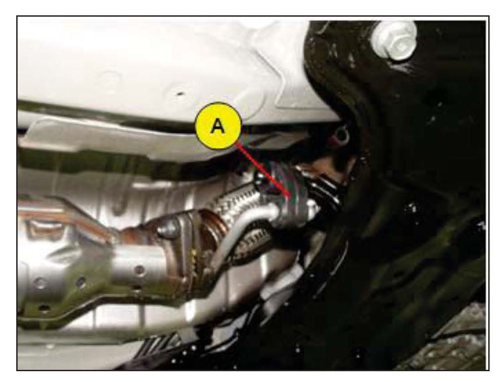
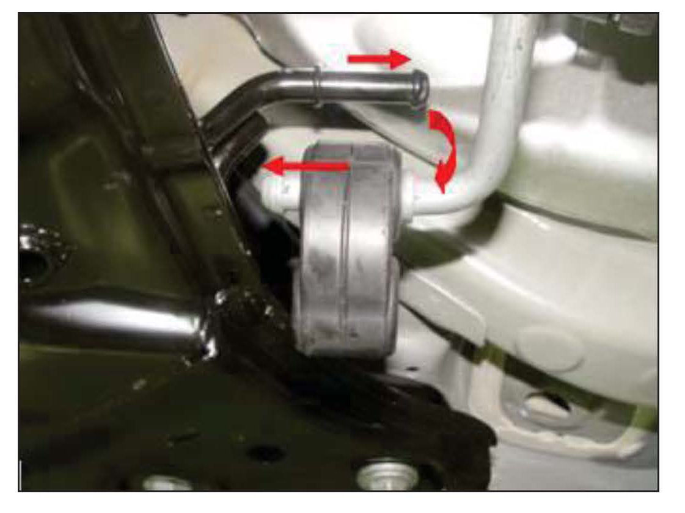
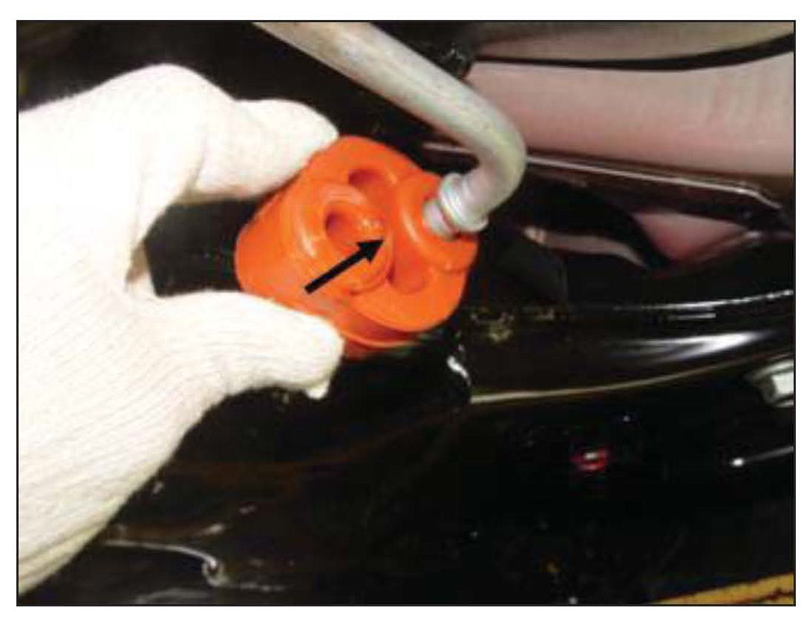

Exhaust System - Front Muffler Rattling Noise In Reverse
GROUPEMISSION
CONTROL
NUMBER
12-EC-001
DATE
OCTOBER 2012
MODEL
ELANTRA (MD)
SUBJECT:
FRONT MUFFLER RATTLE NOISE IN REVERSE WHEN COLD
This TSB supersedes TSB 12-AT-003 to revise the Service Procedure
Description: Some Elantra (MD) vehicles may experience a rattle noise from the front muffler when stopped or backing up. The noise is most noticeable when the engine is cold and does not occur after the engine is warm.
This Service Bulletin provides a procedure to replace the front muffler hanger.
NOTE
Refer to TSB 12-EM-001-2 if the rattle noise is from the center muffler heat shield underneath the vehicle when the engine is cold or hot.
Applicable Vehicles:
Elantra(MD) with automatic transaxle (VINs beginning with KMHDH-)
Applicable Production Date Range: From the beginning of production to Nov. 23, 2011

PARTS INFORMATION:
WARRANTY INFORMATION:
WARNING
Allow the muffler to cool before beginning the repair.
SERVICE PROCEDURE:

1. Lift up the vehicle on a hoist and locate the front hanger of the front muffler (A).

2. Remove the front hanger of the front muffler.
Pull the upper hole side of the front hanger off the nipple (black), then remove the hanger.

3. Install the new front hanger in reverse order of
removal.
4. Test the vehicle to confirm the rattle noise is eliminated.
NOTE
If a rattle noise is heard from the center muffler heat shield underneath the vehicle when the engine is cold or hot, refer to TSB 12-EM-001-2 for the repair procedure.